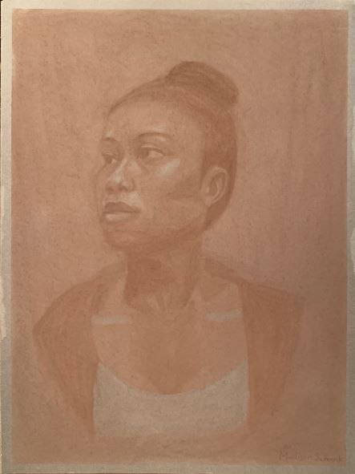
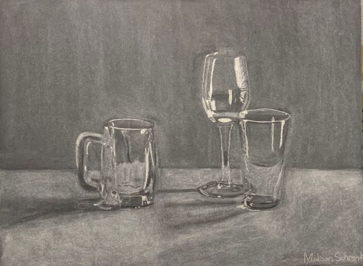

Tiny Wizard, 2021
22 seconds, Stop motion animation
Let's Roll, 2021
12 seconds, Stop motion animation
Portrait, 2020
18" x 24", Bistre conte crayon on gray paper
Glass Still Life, 2020
18" x 24", White conte crayon on black paper
22 seconds, Stop motion animation
12 seconds, Stop motion animation
18" x 24", Bistre conte crayon on gray paper
18" x 24", White conte crayon on black paper